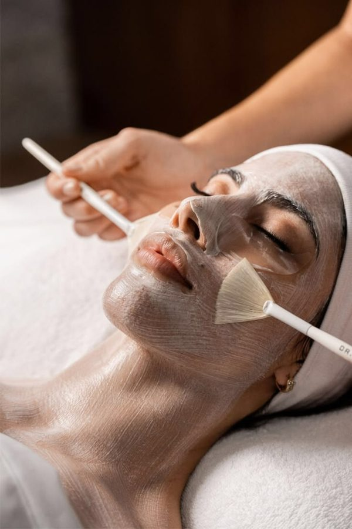
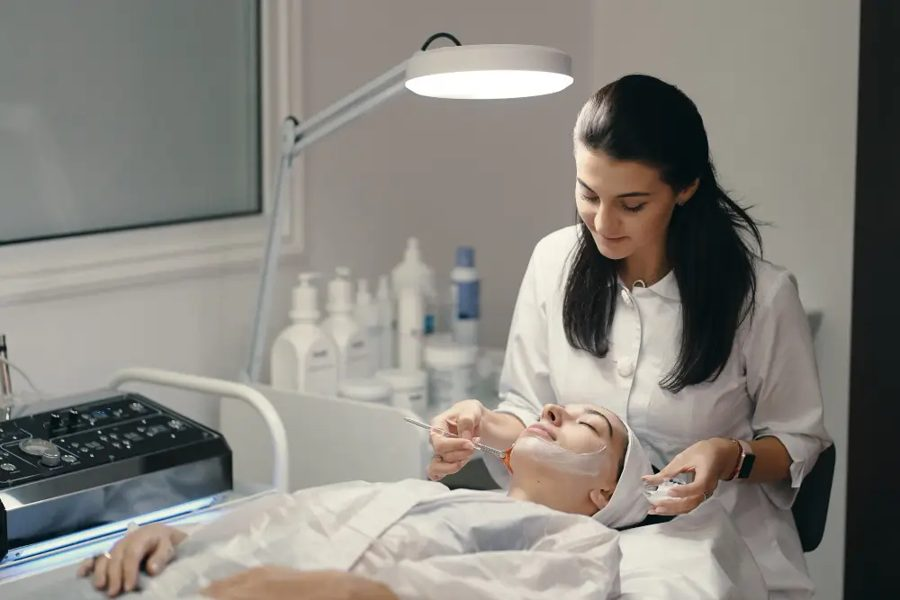
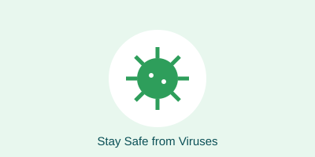
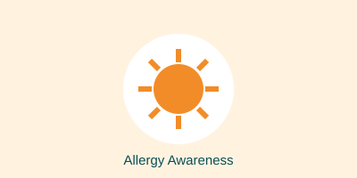

Consult trusted specialists in Cosmetology & Aesthetic and General Physician care.
Book AppointmentTwo departments, one trusted doctor.


Simple habits that keep you and your family safe.

PreventionKnow more, worry less.

AllergyJoin our community health drives.
BP, weight, eye and general check-up by our doctors.
Date: 25 Oct 2026, 10 AM – 4 PM
Free diabetes screening with diet advice.
Date: 02 Nov 2026, 9 AM – 1 PM
One donation can save three lives. Donors get a certificate.
Date: 14 Nov 2026, 10 AM – 3 PM
Appointments are booked on a separate page.
Go to Appointment Page
Social Activity
Giving back to our community.
Health Talks in Schools
Hygiene, nutrition and skin care sessions for students.
Senior Citizen Care Day
Free consultation and BP check for people above 60.
Tree Plantation Drive
A greener neighbourhood means a healthier one.